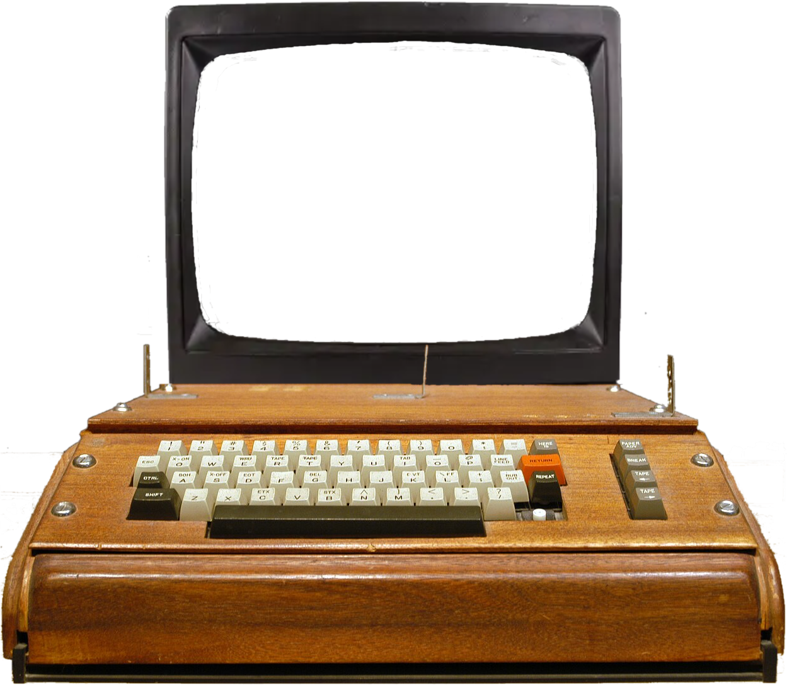

JavaScript Required
This site is a client-side DOS terminal and emulator suite.
It needs JavaScript to run.
Enable JavaScript and reload.
Apple 1js
An Apple 1 Emulator in JavaScript
Type E000R for BASIC
0KHz
Pause
Load
About
Options

Options
CPU
Regulate Speed
Monitor
Green Screen
Show Scanlines
I/O
Turbo Tape Loading
Input Text
Or Select Tape...
Clear
Load Local File